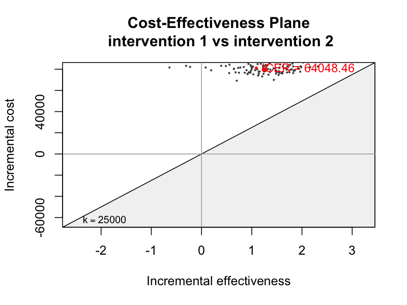
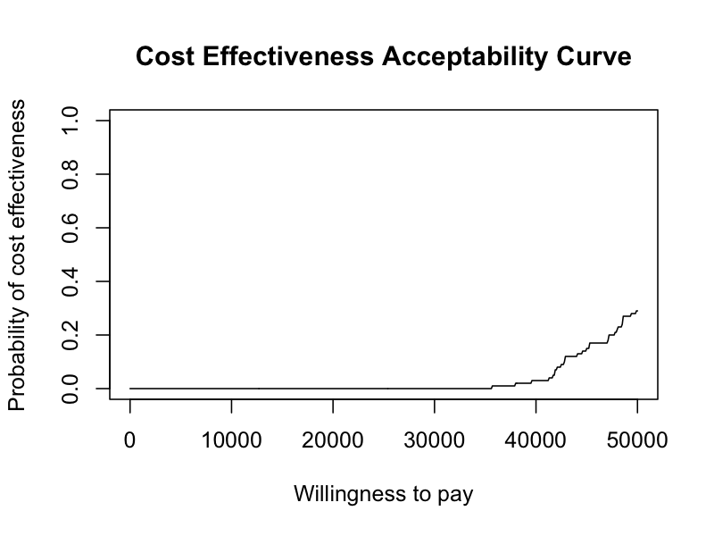

Health Economic Resource Modeling & Evaluation System
HERMES is an R-based framework designed for Real-World Evidence (RWE) and Health Economics and Outcomes Research (HEOR). It streamlines the end-to-end process of Healthcare Resource Utilization (HCRU) analysis and Cost-Effectiveness Analysis (CEA) starting directly from observational data in the OMOP Common Data Model (CDM).
Features
- OMOP CDM Native: Connects programmatically to OMOP CDM databases using CDMConnector and omopgenerics.
- End-to-End Pipeline: From cohort generation to economic simulation and decision analysis plots.
- Causal Inference: Controls for baseline confounding using Propensity Scores (PS) with high-dimensional regularized logistic regression via Cyclops.
- Standardized Outputs: Generates decision-analytic plots like CEACs (Cost-Effectiveness Acceptability Curves) powered by BCEA to inform Health Technology Assessments (HTA).
Quick Start
[!NOTE] The following example uses DuckDB and the synthetic
Eunomiadataset to demonstrate the complete 6-stage pipeline.
library(HERMES)
library(CDMConnector)
library(CohortConstructor)
# 0. Setup Connection (DuckDB Eunomia)
Sys.setenv(EUNOMIA_DATA_FOLDER = file.path(tempdir(), "eunomia"))
con <- DBI::dbConnect(duckdb::duckdb(), CDMConnector::eunomiaDir("GiBleed"))
cdm <- CDMConnector::cdmFromCon(con, cdmSchema = "main", writeSchema = "main")
# Create cohorts (Target, Comparator, Outcome)
cdm$target_cohort <- conceptCohort(cdm, list(target_cohort = 4285898L), "target_cohort")
cdm$comparator_cohort <- conceptCohort(cdm, list(comparator_cohort = 4266809L), "comparator_cohort")
cdm$outcome_cohort <- conceptCohort(cdm, list(outcome_cohort = 192671L), "outcome_cohort")
# 1-6. Run the End-to-End Pipeline
study <- init(cdm, "target_cohort", "comparator_cohort", "outcome_cohort") |>
summarise_baseline() |>
extract_hcru() |>
fit_ps() |>
adjust_ps() |>
compile_trajectories() |>
simulate_economics() |>
run_cea()
# Generate plots
plot_ceac(study)
plot_plane(study)Outputs


The 6-Stage Architecture
HERMES relies on a strict 6-stage analytical framework to transition from observational data to actionable insights.
graph TD
A[(OMOP CDM)] --> S1[Stage 1: Cohort Generation]
S1 --> S2[Stage 2: Baseline & HCRU Characterization]
S2 --> S3[Stage 3: Causal PS Adjustment]
S3 --> S4[Stage 4: Trajectory Compilation]
S4 --> S5[Stage 5: Economic Simulation]
S5 --> S6[Stage 6: Decision Analysis CEA]
S6 --> P1[CEAC Plot]
S6 --> P2[CE Plane Plot]- Cohort Generation: Define target treatment, comparator, and clinical outcome cohorts using standardized vocabularies.
- Descriptive Baseline & HCRU Characterization: Build unadjusted baseline tables, enrich with demographics (using PatientProfiles), and extract raw medical costs and care utilization.
- Causal Propensity Score (PS) Adjustment: Fit high-dimensional regularized logistic regression models based on baseline clinical features to estimate propensity scores and match populations.
- Trajectory Compilation & State-Cost Extraction: Compile balanced patient timelines into mutually exclusive health states over discrete time cycles, extracting state-specific expenditure distributions.
- Economic Simulation: Integrate probabilities and cost distributions into an economic state-transition model. Project long-term costs and Quality-Adjusted Life-Years (QALYs).
- Decision Analysis & Post-Processing (CEA): Compute the Incremental Cost-Effectiveness Ratio (ICER) and Net Monetary Benefit (NMB), generating CEAC and cost-effectiveness plane plots.
Documentation
For a detailed technical overview, function signatures, S3 class object flow, and OMOP COST query strategies, please refer to the documentation: